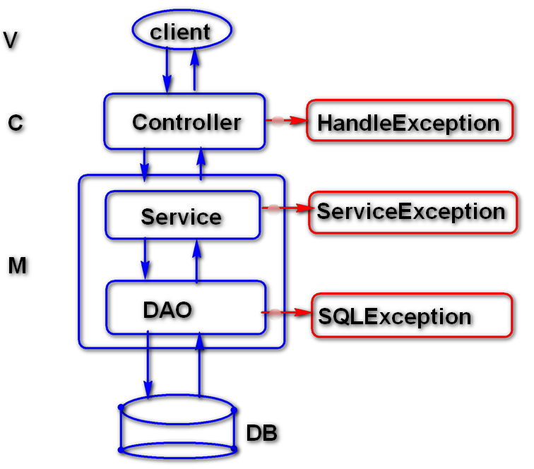

06_spring_MVC_exception
Jan 23, 2018
目录
- 异常概述
- 异常处理
- 异常处理机制
异常概述
软件项目中, 通常采用分层结构设计, 每层都会出现异常. 异常可能会从DAO层逐步抛出到控制层, 可以再控制层对异常进行相关处理.

异常处理
Spring中处理异常时, 通常会定义Controller的异常处理方法, 该方法使用@HandlerException注解进行描述
1 | @ExceptionHandler(value=Exception.class) |
还可以在外部定义全局异常处理类, 该类使用@ControllerAdvice注解进行描述, 内部方法使用@HandlerException注解进行描述.
1 | @ControllerAdvice |
异常处理机制
- Spring MVC 异常处理: 提高系统容错率, 系统更加友好.
- Spring MVC 异常处理方式: 局部处理/全局处理
- Spring MVC 异常处理过程: 首先, 当前Controller类中查找异常处理方法, 若没有匹配的, 则在父类类型中查找异常处理方法, 若没有匹配的, 则在全局异常处理.